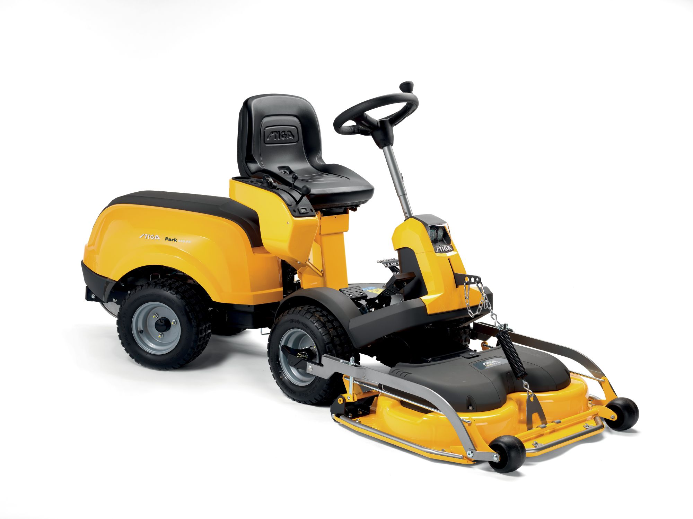
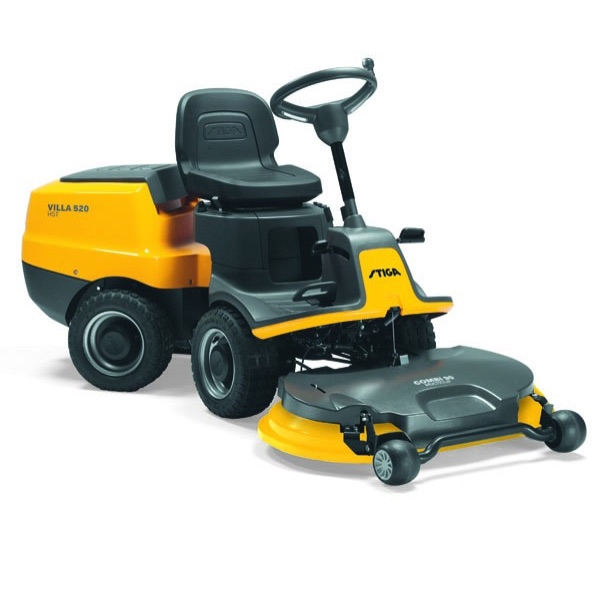
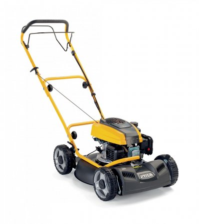
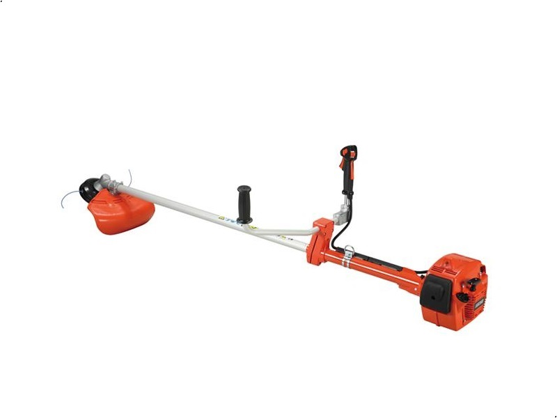
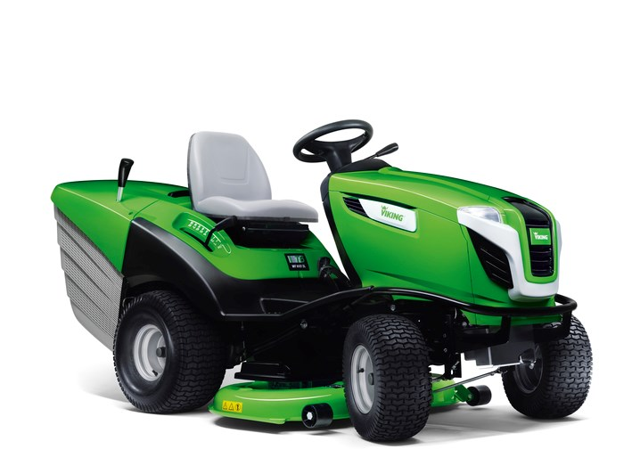
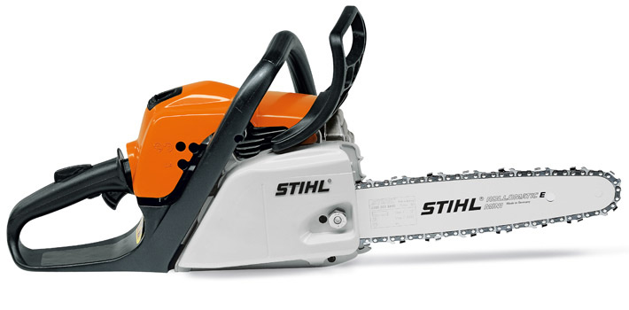
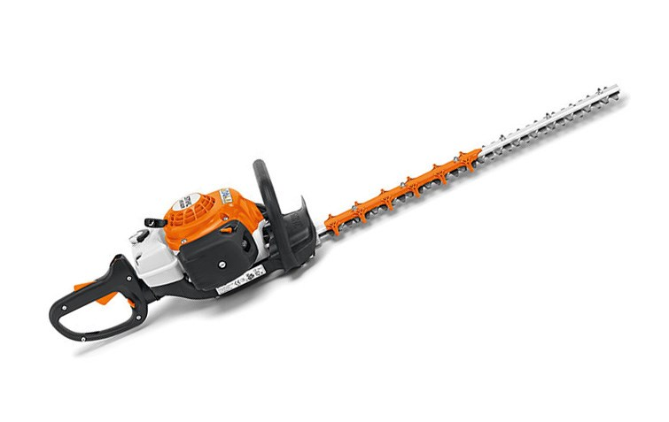

Stiga Frontklipper Park 540 PX
Park 540 er perfekt for dig, der gerne vil have en helårsmaskine til at
vedligeholde store grønne arealer. Rideren leveres med et 95 cm Combi el
aggregat med elektrisk klippehøjdejustering
- det sparer tid, idet klippehøjden kan justeres direkte fra sædet.

Stiga Villa 520 frontklipper plæneklipper
Stiga Villa 520 er en kraftig frontklipper udstyret med en solid Briggs & Stratton
Power Built AVS 3115 motor. Maskinen har knækstyring, hvilket gør det nemt at
manøvrere maskinens selv på små områder og i hjørner når plænen skal klippes.

Benzindrevet plæneklipper Multiclip 50 S
Stiga Multiclip 50 S er til dem der har en ikke alt for stor græsplæne som de slå ret ofte.
Til dem der vil have en drømmehave hvor græsplænen altid er tæt, velplejet og grøn.
I det virkelige liv ser billedet sommetider lidt anderledes ud.
ECHO
Echo motorsav CS352
Echo motorsav CS352 er en lille let håndterlig motorsav i super høj japansk kvalitet.
Til den krævende hobby bruger der laver under 10m3 brænde om året,
eller til at fælde og beskære træer i den store villa og i sommerhuset.
Echo hækkekliper HCR 165ES
Hækkeklipperen til den krævende professionelle bruger
Kraftig maskine med høj effektivitet og ekstrem holdbarhed.
Anti-vibrationssystem, har den laveste vibration af alle på markedet

Echo buskrydder
Topmodellen over alle buskryddere
Heavy-duty rigrør for kommercielt brug
Længere rigrør for bedre arbejdsstilling og dobbelt afvibreringssystem for større komfort
Leveres med klinge og bæresele
STIHL

Viking havetraktor MT 6127 ZL
Største og bedste Havetraktor fra Viking. Havetraktoren har hydrostatisk gear
og er let at betjene for alle. Den centrale klippehøjde indstilling sidder til
højre og du kan let og hurtigt sætte højden på klipperne i 8 forskellige niveauer.

Stihl motorsav MS 171
Topmoderne motorsav til hjem og fritid med meget lave vibrationer. 70% mindre emmission,
30% færre vibrationer, 20% mindre brændstofforbrug og fire gange længere
filterrengøringsintervaller.

Stihl HS 82 RC-E hækkeklipper
Topudstyret, professionel hækkeklipper, som er utroligt let at starte med Easy2Start.
STIHL 2-MIX motor giver god brændstoføkonomi. Den lave knivhastighed giver et godt og
kraftigt snit ligesom den dobbelte kniv er perfekt til beskæring.